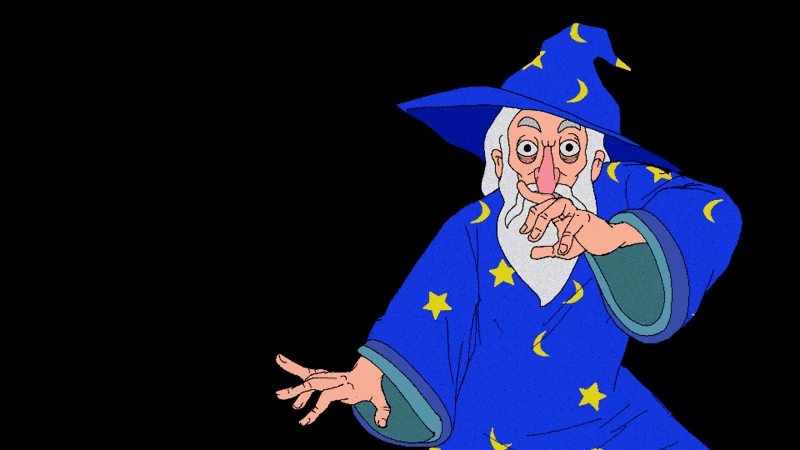

heres what a paragraph looks like
whats your favourite game?
this is the tiktox app
heres what a paragraph looks like if we use
br line breakes
:]
the pre element
maintains
all the spacing and weird stuff we do , so put things inbetween pre if you need to maintain space and stuff
you can also set and change styles with the style element
here ive set the background color to darkblue
you can also send the background color for indivdual things using the style tag
dont forget to buy the things that matter to you
lets delete some things from this message like so
ins is for underlines , like so
this text is pretty strong :o we can even make subscripts in html like so , haha the words are small isnt that cool? we can even
define texts like [s 1 right here ]
Heres a line from one of my favourite characters Roland
I have nothing but my sorrow, and I want nothing more. It has been, it still is, faithful to me. Why should I begrudge it, since during the hours, when my soul crushed the depths of my heart, it was seated there beside me? O sorrow, I have ended, you see, by respecting you, because I am certain you will never leave me. Ah, I realize it: your beauty lies in the force of your being. Because I know that on the day of my final agony, you will be there, lying in my sheets, O sorrow, so that you might once again attempt to enter my heart."
- Francis Jammes
i like this quote because sometimes sorrow can be a really hard thing to escape.
-Delano
The MKP refers to a person who swaps characters
or playstyles constantly without sticking to one sole thing
i forgot to site the work above so lets cite it now Quatorze prières/Prière pour aimer la douleur by Francis Jammes
you can even put boarders around text , this works for headings
the image below is clickable , i wonder where it will take us
3 things i like are